Next: The Outer Product Up: Vector Spaces Previous: Vectors and Plane Geometry Contents Index
Often we are interested in finding, on a plane, the minimum distance from a point to a line. Let us look once more at the theorem of Pythagoras and see how it can used to define the shortest distance from a point to a line.
If we have a right-angle triangle such as in Figure 5.7 , the Pythagorean theorem gives us the equation
If we had a line that passes through two points  and
and  , and a point
, and a point  not on the line, we can draw
Figure 5.8.
Notice that the dotted line segments can represent any line segment from
not on the line, we can draw
Figure 5.8.
Notice that the dotted line segments can represent any line segment from  to the line through
to the line through
 and
and  . It should be obvious from our discussion that the line segment from
. It should be obvious from our discussion that the line segment from  to 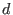
that is at a right
angle to the line through
to 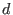
that is at a right
angle to the line through  and
and  must be the shortest line segment.
must be the shortest line segment.
We must now get a little more complicated to show how matrix multiplication may be used to determine if a
line segment is at a right angle to a line. Suppose we have a right-angle triangle composed of the points  ,
,  and
and
 as in Figure 5.9. We place
as in Figure 5.9. We place  on the origin. Then the coordinates of the points are
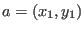
,
on the origin. Then the coordinates of the points are
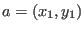
,  and
and
 .
.
Since
Since the triangle formed by
This allows us to create the following equation:
which we expand to:
After canceling like terms we get:
Dividing by -2 and rearranging then gives us:
or, in matrix notation:

This is only true when the triangle is a right-angle triangle, so we now have a way of calculating
when two line segments which connect at a point are at  (
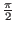
radians) to each other.
(
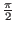
radians) to each other.
Notice that we defined the coordinates of  as 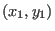
, a row matrix, but
as 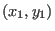
, a row matrix, but  is given as a
column matrix. This is necessary for the calculations to work out properly. We write the coordinates
of
is given as a
column matrix. This is necessary for the calculations to work out properly. We write the coordinates
of  as
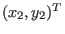
where the
as
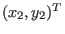
where the  means the transpose of a matrix.
This is a convenience which we will need.
means the transpose of a matrix.
This is a convenience which we will need.
Now we can use this definition to define a type of inner product which is sometimes called the standard dot product. This type of inner product has many applications and studying it will help us later when we examine vector spaces and give a formal definition of a more general inner product.
We can see that
 for
for
 . Furthermore, if
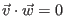
, we say that
and
. Furthermore, if
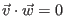
, we say that
and  are orthogonal. Also, if
are orthogonal. Also, if
 ,
then
and
,
then
and  are orthonormal. These definitions hold even
if the norm is specified in some other way.
are orthonormal. These definitions hold even
if the norm is specified in some other way.
We extend the ideas of orthogonal and orthonormal to any list of vectors in
. Suppose we had a list of  vectors
vectors
 , and if
, and if
 for
for  , then the list of vectors is
orthogonal. If we further stipulate that
, then the list of vectors is
orthogonal. If we further stipulate that
 , then this collection of vectors is orthonormal.
, then this collection of vectors is orthonormal.
For vectors
 , two vectors are orthogonal if the angle between them is
radians and
they are orthonormal
if they are unit vectors as well.
, two vectors are orthogonal if the angle between them is
radians and
they are orthonormal
if they are unit vectors as well.
We are almost ready to show how to find the shortest line segment from a point to a line on the plane. First, though, we must define the vector equation for a line and the projection of a vector onto a line.
Suppose we have a line passing through the origin. The line consists of all points 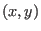 such that 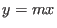 . We can take any point on the line that is not the origin and make a vector 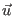 using this point as the vector's terminal point. Therefore any point on can be given by scalar multiplication of the vector by some scalar . In other words, 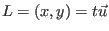 for . See Figure 5.10.
If a line
does not go through the origin, we have that
is all points
such that  . Here we must take two different points from
such as
. Here we must take two different points from
such as
 and
and
 and create a directed line from 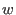
to
and create a directed line from 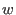
to  . Then we translate this directed line segment
to the vector
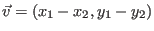
. The points
. Then we translate this directed line segment
to the vector
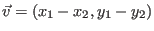
. The points  and
can be thought of as terminal
points of vectors
and
and
can be thought of as terminal
points of vectors
and  , respectively. We choose one of these vectors and write
that the line
, respectively. We choose one of these vectors and write
that the line
 where
. Points on
are defined uniquely by
different values of
, which is called the parameter.
We used the fact that any line segment which can be translated to a vector is equivalent or
parallel to that vector. It points in the same direction. Figure 5.11 illustrates this.
where
. Points on
are defined uniquely by
different values of
, which is called the parameter.
We used the fact that any line segment which can be translated to a vector is equivalent or
parallel to that vector. It points in the same direction. Figure 5.11 illustrates this.
Notice that the vector equation for the line is not unique. It depends on which points on the line we choose. Also notice that 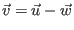 . This allows us to give the general definition for the vector equation of a line.
A natural question is how does one get a vector that is orthogonal to any given vector? The following theorem shows us how to do this.

is orthogonal to .


Using this theorem, we can now define the projection of one vector onto another.

The projection of a vector onto gives another vector which is a scalar multiple of . If is not a scalar multiple of , then a line from the terminal point of the projection to the terminal point of is at a right angle to the projection. If is a scalar multiple of , then their terminal points and the origin are on a straight line. The reader should try a few examples to see what vector is returned by this formula in such cases.
We now have all the machinery necessary to solve our original problem, how to find the point closest to a line. Of course, the ideas we developed are useful for much more than this simple task and we will extend them to deal with more than just points and lines on a plane.
So, given a line
 and a point
and a point
 not on the line, we can translate
the line so that it passes through the origin by subtracting
not on the line, we can translate
the line so that it passes through the origin by subtracting  from it.
The vector
from it.
The vector
 points in the same direction as this line. We can also create a vector
points in the same direction as this line. We can also create a vector  which
has a terminal point at 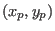
. Then the vector
which
has a terminal point at 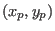
. Then the vector
 has a terminal point that is also translated the
same distance. We project this vector
has a terminal point that is also translated the
same distance. We project this vector
 onto the vector
onto the vector
 .
The projected vector is
proj
.
The projected vector is
proj . Translate this vector onto the line
by adding the vector
. Translate this vector onto the line
by adding the vector
 and the result is a vector with terminal point on the line
that is the shortest distance from
the point
and the result is a vector with terminal point on the line
that is the shortest distance from
the point  . This is illustrated in Figure 5.12.
The unlabeled vector in the bottom right graph in Figure 5.12 is the vector
proj
. This is illustrated in Figure 5.12.
The unlabeled vector in the bottom right graph in Figure 5.12 is the vector
proj . We can see that
. We can see that
 proj
proj .
.
As was mentioned previously, a physicist usually views all directed line segments as vectors so that the
addition of vectors is accomplished by imagining one vector being placed so that its emanating point
is the terminal point of the other vector and the sum is the directed line segment from the unconnected
emanating point to the unconnected terminal point. As well, projections may occur on line segments that
are not vectors emanating from the origin. Viewing things in this way can give a better feeling for
vectors in
and
but the amount of calculation required to get an answer remains the same.
In order to illustrate a calculation, we let
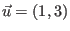
and
 . Then the line
is given by
. Then the line
is given by
 or
or
 . We also let
. We also let
 and
we want to find the point
and
we want to find the point  which is on
that is closest to the terminal point of
which is on
that is closest to the terminal point of  .
.
Our formula gives us
 |
||
 |
||
 |
||
 |
||
| 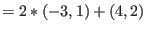 | ||
We see that
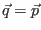
which means that  is on the line
. We can check this
by converting our equation for
into point-intercept form. We start with the fact that
is on the line
. We can check this
by converting our equation for
into point-intercept form. We start with the fact that
 is really a compact notation for two equations:
is really a compact notation for two equations:
| 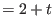 |
| 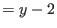 |
For
If the point  , then
proj
, then
proj proj
proj
 . This means that
. This means that
 , the vector equivalent to the directed line
segment from
, the vector equivalent to the directed line
segment from  to
to  , is orthogonal to the vector
, is orthogonal to the vector
 . It is easy to
verify this using the standard dot product.
. It is easy to
verify this using the standard dot product.
In this text we stated that a vector 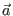
in
can be represented by a matrix
 and that the dot product of two vectors in
,
and that the dot product of two vectors in
,
 , is
equivalent to the matrix multiplication
, is
equivalent to the matrix multiplication  , which returns a scalar
, which returns a scalar
 . We have also
shown a geometric interpretation for points and lines on a plane.
. We have also
shown a geometric interpretation for points and lines on a plane.
It is possible to show other geometric interpretations of vectors and vector spaces. We will do so in the following sections not only for their utility, but also as an aid to understanding some of the beautiful theorems of linear algebra which may appear very abstract at first.

![\includegraphics[width=2cm,height=2.4cm]{pyth.eps}](img1195.gif)
![\includegraphics[width=3.2cm,height=3.4cm]{abcd.eps}](img1197.gif)
![\includegraphics[width=5.3cm,height=4.4cm]{veceq2.eps}](img1237.gif)
![\includegraphics[width=12.0cm,height=10.2cm]{veceq3.eps}](img1250.gif)